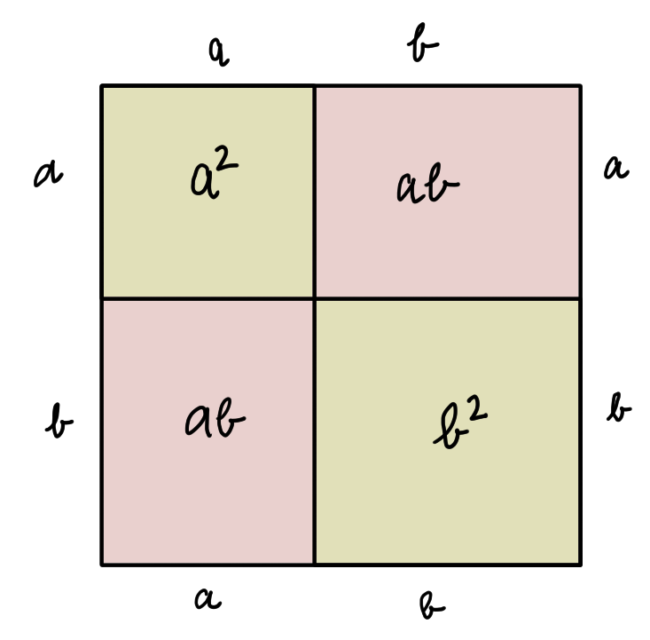

Chapitre 2 Semaine 2 : Calcul littéral (2)
2.1 Exemple d’introduction
2.1.1 A quoi servent les formes binomiales ?
Une forme binomiale est la formule des formules !
Elle est crainte par les étudiants, mais est considéré par les mathématiciens comme un instrument de plus.
Tout d’abord le mot “binomial” signifie que l’on fait référence à deux (“bi”) inconnues. Il s’agit de la somme \(a+b\), ou dit d’une manière plus correcte, il s’agit de la puissance de cette somme, au carré par exemple
\[(a+b)^2\]
Que nous raconte cette expression ? Que pour calculer le carré d’un grand nombre \(a+b\), il suffit de multiplier des nombres plus petits (\(a\) et \(b\)) et puis d’additionner de tels produits : \(a^2+2ab+b^2\).
La formule, qui s’appelle une identité, s’écrit alors
\[(a+b)^2 = a^2+2ab+b^2\]
On dit identité, car le résultat que donne l’expression de gauche de l’égalité est identique à celui que donne l’expression de droite. Mais, est-elle correcte ?
Pour s’en convaincre voyons un exemple. Supposons que l’on veuille calculer \(13^2\). Pour ce faire écrivons \(13\) comme la somme de \(10\) et \(3\). Donc \(a=10\) et \(b=3\). Alors
\[13^2 = (10+3)^2=10^2+2\cdot 10\cdot 3+3^2= 100 + 60 + 9= 169\]
Un grand nombre d’élèves ne “digèrent” pas le terme \(2ab\) et auraient préféré que la formule soit \((a+b)^2=a^2 + b^2\).
Attention, la formule ainsi écrite est fausse. Le terme \(2ab\) n’est pas une idée farfelue des mathématiciens, non. Ce terme fait partie intégrante de la formule et lui est nécessaire.
Un autre exemple est: combien cela fait \(1'001^2\) ?
En appliquant la forme binomiale, avec \(a=1'000\) et \(b=1\) on a
\[\begin{align*} 1'001^2 & =(1'000 + 1)^2 \\ & = 1'000^2 +2\cdot 1'000\cdot 1 + 1^2 \\ & = 1'000'000+2'000+1 \\ &=1'002'001\\ \end{align*}\]
Pour montrer une fois pour toutes que le terme \(2ab\) est nécessaire, les mathématiciens démontrent les propositions. Dire que cette formule est correcte est une proposition. Il existe plusieurs manières de la démontrer, mais la plus “parlante” est la preuve géométrique ci-dessous:
On dessine un carré avec une longueur de côté de \(a+b\). L’aire de ce carré est donc de \((a+b)^2\). Ensuite, dans ce grand carré, nous traçons deux autres carrés, opposés par l’un des sommet, l’un de côté \(a\) et l’autre de côté \(b\). L’aire de ces deux nouveaux carrés est \(a^2\) et \(b^2\) respectivement. La somme des deux aires vaut \(a^2+b^2\).

Or, il reste deux figures à l’extérieur des deux petits carrés. Il s’agit de deux rectangles identiques ayant pour longueur des côtés \(a\) et \(b\). L’aire de chacun est \(ab\) et l’aire des deux \(2ab\).
Nous avons réussi à exprimer l’aire totale du grand carré de deux manières différentes !
\[\text{Aire grand carré}=\text{Aire deux petits carrés} + \text{Aire deux rectangles}\]
Ce qui constitue la formule et la fin de la démonstration:
\[(a+b)^2 = a^2+2ab+b^2\] \(\square\)
2.2 Bases théoriques
2.2.1 Monômes
Un momôme en \(x\) est une expression de la forme \[ax^n\qquad a\in\mathbb{Q}\text{ et } n\in\mathbb{N}\]
Remarques
- Tous les monômes ne sont pas des monômes en \(x\). Par exemple: \(3abc\) qui est un monôme en \(abc\); \(5a^2\) qui est un monôme en \(a\); \(4y\) qui est un monôme en \(y\).
- Par convenstion, le monôme \(5\cdot a\cdot b\cdot c\) d’écrit \(5abc\).
- Dans un monôme, on distingue deux parties: un coefficient et une partie littérale (voir figure).
2.2.1.1 Monômes semblables
Des monômes sont semblables si leurs parties littérales sont identiques.
\(\\[.5cm]\)
Ainsi \(5{\color{red}ab^2c}\), \(\dfrac{-1}{2}{\color{red}ab^2c}\), \(-3{\color{red}ab^2c}\) sont des monômes semblables, mais \(5ab^2c\), \(\dfrac{-1}{2}a^2bc\), \(-3a^2b^2c\) ne le sont pas.
2.2.1.2 Produit de monômes
Il suffit de prendre des monômes et de multiplier entre elles les deux parties composant les monômes: les parties littérales entre elles et les parties numériques.
\(\\[.5cm]\)
La loi de la commutativité nous permet de commuter les facteurs au moment de la multiplication:
\[\begin{align*} -2a^3b\cdot\dfrac{3}{4}ab^2c & = \left(-2\cdot\dfrac{3}{4}\right)\cdot(a^3\cdot a)\cdot(b\cdot b^2)\cdot c\\ & = -\dfrac{3}{2}\cdot a^4\cdot b^3\cdot c\\ & = -\dfrac{3}{2}a^4b^3c\\ \end{align*}\]
2.2.2 Polynômes
Un polynôme est une somme de monômes.
2.2.2.1 Produit d’un polynôme par un monôme
Exemples
\[3a\cdot(6b+7c) = 3a\cdot 6b+ 3a\cdot 7c = 18ab+21ac\] \[(2x+5a)\cdot 2ax=2x\cdot 2ax + 5a\cdot 2ax = 4ax^2+10a^2x\] \[5(a-b-c) = 5(a+(-b)+(-c))=5\cdot a+5\cdot(-b) 5\cdot(-c) = 5a-5b-5c\]
La distributivité de la multiplication par rapport à l’addition permet de multiplier le monôme par chaque terme du polynôme.
La mise en évidence
Est une “technique” qui permet la factorisation. Par exemple l’égalité \[5x(2y-z) = 10xy-5xz\] peut être lue dans ce sens \[10xy-5xz= 5x(2y-z)\]
Le passage de l’expression \(10xy-5xz\) à l’expression \(5x(2y-z)\) s’appelle mise en évidence des facteurs communs ou simplement mise en évidence.
En effet, dans les deux premiers termes \(10xy\) et \(5xz\) il y a un facteur commun, qui est \(5x\) justement.
Par exemple:
\[\begin{align*} 16x^3y^2-24x^2y+40x^2y^2 & ={\color{red}2}\cdot {\color{red}2}\cdot {\color{red}2} \cdot 2\cdot {\color{red}x}\cdot{\color{red}x}\cdot x\cdot {\color{red}y}\cdot y - {\color{red}2}\cdot {\color{red}2}\cdot {\color{red}2} \cdot 3\cdot{\color{red}x}\cdot{\color{red}x}\cdot{\color{red}y} +{\color{red}2}\cdot {\color{red}2}\cdot {\color{red}2} \cdot 5\cdot{\color{red}x}\cdot{\color{red}x}\cdot{\color{red}y}\cdot y\\ & = {\color{red}8x^2y}(2xy-3+5y)\\ \end{align*}\]
Remarquer que le monôme \(8x^2y\) est le PGDC des trois termes du polynôme.
2.2.2.2 Somme de monômes semblables
Pour effectuer la somme de monômes semblables, on additionne les coefficients et on garde la partie littérale.
Dans \[5a+8a = a\cdot(5+8)=a\cdot 13=13a\] le passage de l’expression \(5a+8a\) à l’expression \(13a\) s’appelle réduction de termes semblables.
Exemples
\[\begin{align*} 15x^2+3x^2-7x^2 & = x^2\cdot(15+3-7)=11x^2\\ \\\\ 6a^2b-8a^2b-a^2b & = a^2b(6-8-1)=-3a^2b\\ \\\\ 16ab+8xy-ab+2xy &= (16ab-ab)+(8xy+2xy)\\ &= ab(16-1)+xy(8+2)\\ &= 15ab+10xy\\ \\\\ 9x^2y+12xy^2+8x^2y-5xy^2+xy-17x^2y &= 9x^2y+8x^2y-17x^2y+12xy^2-5xy^2+xy\\ &= x^2y(9+8-17)+xy^2(12-5)+xy\\ &= 7xy^2+xy\\ \end{align*}\]
Somme de polynômes
L’associativité de l’addition permet de supprimer les parenthèses entre les polynômes qu’on additionne:
\[\begin{align*} (5x^3-8x^2-3x-4)+(-x^3+2x^2+5) & = 5x^3-8x^2-3x-4-x^3+2x^2+5\\ & = 5x^3-x^3-8x^2+2x^2-3x-4+5\\ & = 4x^3-6x^2-3x+1\\ \end{align*}\]
Différence de polynômes
L’opposé d’un polynôme s’obtient en changeant les signes de chacun de ses termes; il s’agit en fait d’une multiplication par \((-1)\):
\(5ax\) et \(-5ax\) sont des monômes opposés, car leur somme est nulle: \[(5ax)+(-5ax)=0\]
\((-4x^2+3x-5)\) et \((4x^2-3x+5)\) sont des polynômes opposés, pour les mêmes raisons: \[(-4x^2+3x-5)+(4x^2-3x+5) = -4x^2+3x-5+4x^2-3x+5=0\]
Pour soustraire un polynôme, on additionne son opposé.
Exemples
\[\begin{align*} (3a^2b-2ab+5b^2)-(4ab-3a^2b-6b^2) &= (3a^2b-2ab+5b^2)+(-4ab+3a^2b+6b^2)\\ &= 3a^2b-2ab+5b^2-4ab+3a^2b+6b^2\\ &= 6a^2b-6ab+11b^2\\ \\ (3x^2y+8xy^2)-((-xy+5xy^2)-(-11x^2y+7xy)) &= (3x^2y+8xy^2)-((-xy+5xy^2)+(+11x^2y-7xy))\\ &=(3x^2y+8xy^2)-(-xy+5xy^2+11x^2y-7xy)\\ &=(3x^2y+8xy^2)+(+xy-5xy^2-11x^2y+7xy)\\ &=3x^2y+8xy^2+xy-5xy^2-11x^2y+7xy\\ &=-8x^2y+3xy^2+8xy\\ \\ 8(a+b)-3(a-b) &=(8(a+b))-(3(a-b))\\ &=(8a+8b)-(3a-3b)\\ &=(8a+8b)+(-3a+3b)\\ &=8a+8b-3a+3b\\ &=5a+11b\\ \end{align*}\]
2.2.2.4 Produit de polynômes
Comment effectuer le produit \((a+b)\cdot (c+d)\) ?
Si on pose \((a+b)=u\), on obtient \[{\color{red}u}\cdot(c+d) = {\color{red}u}\cdot c + {\color{red}u}\cdot d\] et donc
\[{\color{red}(a+b)}\cdot(c+d) = {\color{red}(a+b)}\cdot c + {\color{red}(a+b)}\cdot d\]
La distributivité de la multiplication par rapport à l’addition permet de multiplier chaque terme du premier polynôme par chaque terme du second.
\[(a+b)\cdot(c+d)=ac+ad+bc+bd\]
Exemples
\[\begin{align*} (2x-3y)\cdot(x+y) & =2x^2+2xy-3xy-3y^2\\ & = 2x^2-xy-3y^2\\ \\ (x+3)\cdot(x-5)\cdot(x+4) &= ((x+3)(x-5))\cdot(x+4)\\ &=(x^2-5x+3x-15)(x+4)\\ &=(x^2-2x-15)(x+4)\\ &=x^3+2x^2-23x-60\\ \end{align*}\]
2.2.2.5 Produits remarquables
Certains produits de polynômes se rencontrent fréquemment; on les appelle produits remarquables.
Carré d’une somme de deux termes
L’expression \((x+y)^2\) peut être développée comme suit \[(x+y)^2=(x+y)(x+y)=x^2+xy+xy+y^2= x^2+2xy+y^2\]
Et on a
\[(a+b)^2 = a^2 + 2ab + b^2\]
Exemples
\[\begin{align*} 23^2 &=(20+3)^2\\ &=20^2+2\cdot 20\cdot 3+3^2 = 400+120+9=529\\ \\ (3x+5y)^2 &= (3x)^2+2\cdot 3x \cdot 5y + (5y)^2\\ &= 9x^2+30xy+25y^2\\ \\ (\dfrac{1}{2}+2x)^2 &= (\dfrac{1}{2})^2+2\cdot\dfrac{1}{2}\cdot 2x+(2x)^2\\ &=\dfrac{1}{4}+2x+4x^2\\ \end{align*}\]
Carré d’une somme de deux termes
\[(x-y)^2=(x-y)(x-y)=x^2-xy-xy+y^2=x^2-2xy+y^2\]
\[(a-b)^2 = a^2 - 2ab + b^2\]
Exemples
\[\begin{align*} 38^2=(40-2)^2 & = 40^2-2\cdot 40\cdot 2+2^2\\ &= 1600-160+4\\ &= 1444\\ \\ (0{,}2x-1{,}2x)^2 &= (0{,}2x)^2-2\cdot 0{,}2x\cdot 1{,}2y+(1{,}2y)^2\\ &= 0{,}04x^2 - 0{,}48xy + 1{,}44y^2\\ \\ (3a^3-2a^2)^2 &= (3a^3)^2-2\cdot 3a^3\cdot 2a^2+(2a^2)^2\\ &= 9a^6 - 12a^5 + 4a^4\\ \end{align*}\]
Produit d’une somme de deux termes par leur différence
\[(x+y)\cdot(x-y) = x^2-xy+xy-y^2=x^2-y^2\]
\[(a+b)\cdot(a-b) = a^2-b^2\]
Exemples
\[\begin{align*} 81\cdot 79 & = (80+1)\cdot (80-1)\\ &= 80^2 -1^2 \\ &= 6400-1\\ &= 6399\\ \\ (3a+2b)\cdot(3a-2b) &= (3a)^2-(2b)^2\\ &= 9a^2-4b^2\\ \\ (x+1)(x-1)\cdot(x^2-1) &= (x^2-1)\cdot(x^2-1)\\ &= x^4-2x^2+1\\ \end{align*}\]
2.2.2.6 Factorisation
Factoriser une expression c’est la décomposer en un produit de facteurs.
\(\\[0.5cm]\)
Pour factoriser, on utilise essentiellement deux techniques:
La mise en évidence
Par exemple: \[25a^2+15ab-5a = 5a(5a+3b-1)\] où on applique une distributivité si on lit de droite à gauche.
Les produits remarquables
Par exemple: \[\begin{align*} 4x^4 + 12x^2y+9y^2 &= (2x^2+3y)^2\\ \\ a^2-a+\dfrac{1}{4} &= (a-\dfrac{1}{2})^2\\ \\ 16x^2-0{,}25 &= (4x-0{,}5)(4x+0{,}5)\\ \\ x^4-1 &= (x^2+1)\cdot(x^2-1)\\ & =(x^2+1)(x-1)(x+1)\\ \end{align*}\]
2.3 Exercices résolus (exemples)
Solution 1
On observe l’expression. Il s’agit d’une parenthèse, comportant une addition et d’un facteur (\(5\)) qui la multiplie. Seulement ce facteur est à droite de la parenthèse.
Cela ne pose aucun problème, car \((x+a)\cdot 5 = 5\cdot (x+a)\), grâce à la commutativité de la multiplication.
On doit donc distribuer le facteur \(5\) dans la parenthèse. La solution s’écrit:
\[(x+a)\cdot 5= 5x+5a\]
Solution 2
La seule différence par rapport à l’exemple précédent c’est que la parenthèse est composée de la somme de trois monômes, autrement dit un polynôme à trois termes.
La solution s’écrit donc ainsi
\[\begin{align*} (2ab-3a+b)\cdot 5x & =2ab\cdot 5x-3a\cdot 5x + b\cdot 5x \\ & = 10abx-15ax+5bx \end{align*}\]
Solution 3
On se souvient que factoriser c’est décomposer une somme en un produit. On utilise pour ce faire une mise en évidence des facteurs “qui se retrouvent” dans chacun des termes du polynôme.
Ici, chaque partie numérique des termes est un multiple de \(9\) et on voit que du côté des lettres, c’est le \(a\) qui se retrouve dans tous les termes. On a donc trouvé notre facteur commun: \(9a\).
On met ce facteur à l’extérieur d’une paire de parenthèses. L’intérieur de la parenthèse contiendra le quotient de chaque terme par \(9a\). Autrement dit, on va diviser chacun des termes par \(9a\) et écrire le résultat dans la parenthèse:
\[9a^2b^2-27ab+63a=9a(ab^2-3b+7)\]
et nous avons transformé la somme en un produit, c’est-à-dire, nous avons factorisé l’expression de départ.
2.4 Exercices et problèmes
2.4.1 Exercices (I)
Exercice 1
Parmi les monômes suivants, groupe ceux qui sont semblables
\(\begin{array}{lcr} 3x^2y & 3xy^2 & -3x^2y^2\\ \dfrac{1}{2}x^2y & -\dfrac{2}{3}x^2y^2 & \dfrac{3}{5}x^3y^2\\ 2\cdot x \cdot y^2 & -\dfrac{2}{7}x\cdot y^2\cdot xy & -5y^2\cdot x\\ 4\cdot x\cdot y\cdot x\quad & -\dfrac{1}{2}y^3x^2 &\quad -0{,}2x^2\cdot y\cdot xy\\ \end{array}\)
Exercice 2
Calcule la valeur des monômes suivants si \(a=-1\) et \(b=2\)
- \(\quad3a^2b\)
- \(\quad-2a^3b^2\)
- \(\quad\dfrac{1}{2}a^3b\)
- \(\quad-\dfrac{1}{3}a^2b^2\)
- \(\quad\dfrac{3}{4}a^4b^3\)
- \(\quad-5a^5b^4\)
- \(\quad-\dfrac{1}{6}ab^3\)
- \(\quad\dfrac{3}{5}a^6b^3\)
Exercice 3
Effectue le produit des monômes suivants
- \(\quad 3x^2\cdot 2y \cdot 5y^3\cdot 4x^3\)
- \(\quad 2a^2\cdot (-5ab)\cdot 3ab^3\)
- \(\quad ay^3\cdot\left(-\dfrac{1}{2}ay^2\right)\cdot 5a^5\)
- \(\quad 4b^2\cdot \dfrac{1}{2}a^3\cdot \dfrac{3}{5}a^2\)
- \(\quad 5y^3\cdot(-3b^3)\cdot\frac{2}{15}b^2y\cdot a^0\)
- \(\quad 2x^3y^2\cdot \left(-\dfrac{3}{4}xy^2\right)\cdot\dfrac{1}{3}x^3\)
- \(\quad \dfrac{5}{8}\cdot 3a^3b^2\cdot\left(-\dfrac{2}{3}b^5\right)\cdot(-12a^3)\)
- \(\quad -x\cdot (-5a^3)\cdot\left(\dfrac{-2a^2y^3}{3}\right)\cdot\left(-\dfrac{1}{7}y^2x\right)\)
Exercice 4
Ecris les monômes sous leur forme réduite
- \(\quad 2(a^2x)^2\)
- \(\quad -5a(x^2y)^4\)
- \(\quad (-2a^2x)^2\)
- \(\quad -(3x^3y^2)^4\)
- \(\quad (-2a^3)^2\cdot 3a^4\)
- \(\quad -(3x^3y)^2\cdot 2(xy^2)^3\)
- \(\quad (-0{,}1x^2y)^3\cdot(10x^3y^2)^2\)
- \(\quad \left(\dfrac{2}{3}x^2y^3\right)^2\cdot\left(-\dfrac{3}{5}xy^2\right)\)
Exercice 5
Effectue les produits
- \(\quad x(x+y)\)
- \(\quad a(a^2+a)\)
- \(\quad 2y(a-y)\)
- \(\quad (a^3-a^2)\cdot 2a\)
- \(\quad (x^3+xy)\cdot x^2\)
- \(\quad (-y^3)\cdot(ay-y^2)\)
- \(\quad 2a^2(a-3b)\)
- \(\quad 5x^2(x^3-2+z^2)\)
- \(\quad (y^3+2ay+y^2)\cdot 3y^2\)
- \(\quad (-4a^3)\cdot(2ab+3a^2-1)\)
- \(\quad (5x^2y+2xy^2-x^3y)\cdot x^2y\)
- \(\quad (-2z^2)\cdot(-5+3z-z^3)\)
2.4.2 Exercices (II)
Exercice 1
Mets en évidence les facteurs communs
- \(\quad 2a+4b\)
- \(\quad 5x-15y\)
- \(\quad 12a+15b-9c\)
- \(\quad 8x -4y +2\)
- \(\quad 5a + 7ab\)
- \(\quad ab+ac\)
- \(\quad 2x+4xy-2xz\)
- \(\quad 3a+2a\)
- \(\quad xy+2x\)
- \(\quad 4ac-4bc\)
Exercice 2
Mets en évidence et réduis les termes semblables s’il y a lieu
- \(\quad 3a+4a\)
- \(\quad 3a+6\)
- \(\quad 5a-3a\)
- \(\quad 4a+3\)
- \(\quad 4xy+6xy\)
- \(\quad 4xy+3xy-xy\)
- \(\quad 2a-5a\)
- \(\quad 2a-5\)
- \(\quad 3ab-4ab-2ab\)
- \(\quad -3x+4x\)
- \(\quad -2xy-5xy+3xy\)
- \(\quad 3xy+4xy-xy\)
Exercice 3
Réduis les monômes semblables
- \(\quad 6x-4y-4x+7y\)
- \(\quad 3c-8d-18d+5c\)
- \(\quad 3{,}8u-5{,}9u+3{,}5v-3{,}5\)
- \(\quad 3xy -4x^2y+5xy-x^2y\)
- \(\quad 8x^2-3x^3-(-5x^2)-x^3\)
- \(\quad 4x-(-2y)-(-2x)-y\)
- \(\quad 2abc -3ab^2-(-abc)\)
- \(\quad 18ab^2-3a^2b-8a^2b+5ab^2\)
- \(\quad -(-5uv)-10u^2v+uv-(-u^2v)\)
- \(\quad a-(-2b)+(-3a)-(-2a)-4b\)
2.4.3 Problèmes (III)
Problème 1
Factorise
- \(\quad (4a+5b)(x-y)+6c(x-y)\)
- \(\quad 5x(a+2b)+(y-z)(a+2b)\)
- \(\quad -5a(b+c)-(b+c)\)
- \(\quad b(2x+y)-(a+c)(y+2x)\)
- \(\quad (2x-3a)\cdot 5b+(6b-3y)(2x-3a)\)
- \(\quad (x-2y)\cdot 5x+5x(x-2y)\)
Problème 2
Factorise en utilisant si possible les produits remarquables
- \(\quad 36a^2-60ab+25b^2\)
- \(\quad 4x^2-2xy+\dfrac{1}{4}y^2\)
- \(\quad 9x^2-4xy+\dfrac{4}{9}y^2\)
- \(\quad x^2-\dfrac{1}{2}xy+\dfrac{1}{16}y^2\)
- \(\quad 4a^2-a+\dfrac{1}{16}\)
- \(\quad 16y^2-24yz+4z^2\)
Problème 3
Factoriser
- \(\quad a^2-b^2\)
- \(\quad y^2-z^2\)
- \(\quad 4a^2-b^2\)
- \(\quad 16x^2-25y^2\)
- \(\quad x^4-1\)
- \(\quad 25c^2-30d^2\)
- \(\quad 1-16a^4\)
- \(\quad 49-64x^2\)